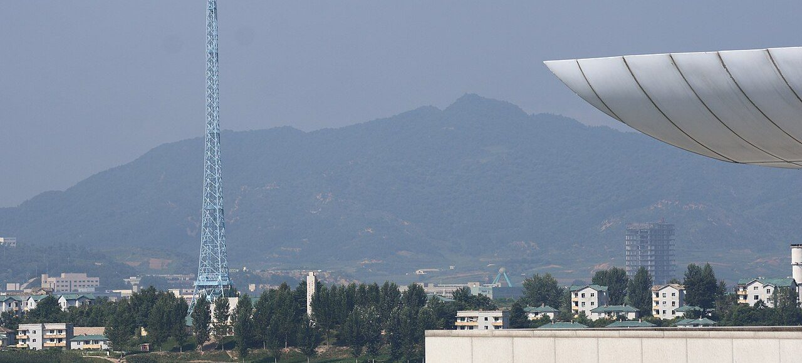
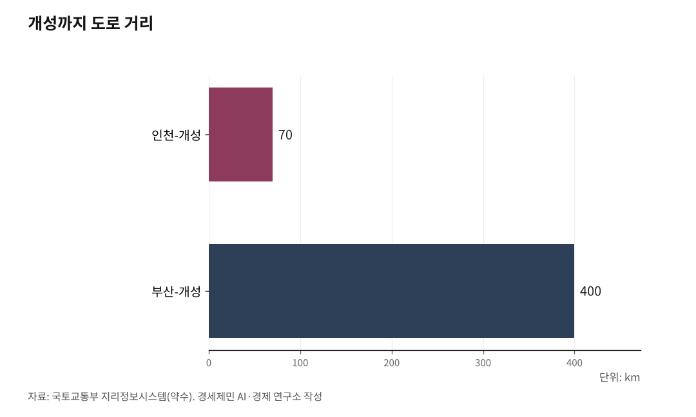

[인천해양산업, 생존기로⑫] 남북교류 재개되면, 인천은 준비돼 있나
인천-개성 70km, 대륙 관문 잠재력은 압도적... 전략 세울 연구기관이 없다
AI경세제민=김갑봉 기자 | 2024년 10월 15일 정오, 북한군이 경의선과 동해선 남북 연결도로를 폭파했다. 군사분계선 10m 북쪽이었다. 합동참모본부는 "북한이 연결도로 차단 목적으로 폭파 행위를 자행했다"고 발표했다. 20년 넘게 남북 화해와 협력을 상징하던 길이 사라졌다.

이 폭파는 남북 육로가 완전히 차단됐다는 사실을 보여준다. 동시에, 남북교류가 재개될 경우 인천이 대륙 연결 관문이 될 수 있다는 지정학적 현실도 다시 부각된다.
2024년 10월, 경의선이 폭파됐다
북한군 총참모부는 2024년 10월 9일 "대한민국과 연결된 도로와 철길을 완전히 끊어버리고 견고한 방어축성물들로 요새화하는 공사를 진행한다"고 선언했다. 6일 뒤인 10월 15일, 경의선 국도가 군사분계선 10m 북쪽에서 폭파됐다. 동해선도 같은 날 폭파됐다.
10월 17일 조선중앙통신은 "남부국경 동·서부지역에서 대한민국과 련결된 도로와 철길 완전폐쇄"라는 제목으로 이를 공식 보도했다. 적대적 두 국가론을 담은 헌법 개정 사실도 처음 공개했다. 위성사진에는 폭파 지점에 요새화 공사가 진행되는 모습이 포착됐다.
경의선은 서울역에서 신의주청년역까지 잇는 철도 노선이다. 2000년 6·15 공동선언으로 복원 합의가 이뤄졌다. 2003년 남북 연결식을 거쳐, 2007년 5월 17일 시험운행이 실시됐다.
같은 해 12월부터 2008년 11월까지 문산역과 판문역(봉동역) 사이에서 개성공단 전용 화물열차가 정기 운행됐다. 그러나 2008년 11월 북한의 일방 통보로 운행이 중단됐고, 2024년 10월 물리적으로 폭파됐다. 현재 남북 간 육로는 완전히 차단된 상태다.

인천-개성 70km, 부산-개성 400km
남북교류가 재개될 경우, 인천이 가진 지정학적 위치는 압도적이다. 국토교통부 지리정보시스템(GIS)을 보면, 인천에서 개성까지 거리는 약 70km(도로 기준)다. 부산에서 개성까지는 약 400km다. 5.7배 차이다.
경의선은 서울역에서 개성, 평양을 거쳐 신의주까지 이어진다. 신의주에서 압록강 철교를 건너면 중국 단둥이다. 단둥에서 베이징까지는 약 830km다.
이 경로는 TCR(중국횡단철도, Trans-China Railway)과 연결된다. TCR은 중국 연운항에서 시안, 우루무치를 거쳐 카자흐스탄 국경까지 이어지는 국제 철도 노선이다. 1992년 TSR(시베리아횡단철도, Trans-Siberian Railway)과 연결됐다. TSR은 블라디보스토크에서 모스크바까지 9288km에 달하는 세계 최장 단일 철도 노선이다.
경의선이 복원되면, 인천은 TCR·TSR로 유럽까지 연결되는 대륙 철도망의 시작점이 될 수 있다. 서해안 축인 인천은 중국 내륙과 중앙아시아를 거쳐 유럽으로 향하는 경로에서 동해안 축인 부산보다 구조적으로 유리하다. 경인광역경제권 인구 약 2600만명이라는 배후시장도 인천 강점이다.
다만 2018년 남북 공동점검 당시 언론 보도를 보면, 북측 경의선 구간 선로 상태는 심각했다. 평균 시속 30~50km, 일부 구간은 시속 10~20km에 그쳤다. 현대화 없이는 대륙 철도 연결의 실효성을 확보하기 어렵다.
끊긴 바닷길, 인천항 대북 해상물류 10년째 제로
남북 간 바닷길도 끊긴 지 오래다. e-나라지표(국가통계포털)를 보면, 남북 해상물동량은 2005년 남북해운합의서 체결 이후 증가세를 보였다. 2007년까지 대폭 늘었다.
그러나 2010년 5·24 조치로 남북 간 국적선 운항이 전면 중단됐다. 천안함 피격 사건 대응 조치였다. 이후 물동량은 급감했고, 2016년부터 남북 간 항로는 완전히 단절됐다.
KDB 산업은행 경제연구소 "KDB 북한경제 리뷰"(2018년 9월호)를 보면, 남한 항만 하역 능력은 북한 대비 26.2배에 달한다. 인천항은 대북 해상물동량의 상당 부분을 처리했으나, 5·24 조치 이후 대북 직항로가 전면 중단돼 관련 실적이 전무한 상태가 10년 넘게 이어지고 있다.
인천항에서 해주항까지는 약 113km다. 해주항은 화물처리능력 연간 240만톤, 1만톤급 선박 접안이 가능하다(북한정보포털, 2021년 기준). 남포항은 대동강 하구에 위치한 북한 최대 무역항이다. 남북교류가 재개될 경우, 인천-해주, 인천-남포 항로는 서해안 해상물류 핵심 축이 될 수 있다.
다만 유엔 안보리 대북제재 결의안(2397호 등)에 따라, 현재 북한과의 경제협력은 제재 예외 승인 없이 추진이 불가능하다. 석탄, 철광석, 수산물 수출이 금지돼 있다. 해운, 금융, 노동자 파견까지 광범위한 규제가 적용된다. 남북경협 재개는 비핵화 진전과 제재 완화라는 국제적 전제가 충족돼야 가능하다.
대륙철도 연결되면, 해상운송보다 50% 빠르다
수에즈 운하를 경유하는 해상 항로는 30~40일이 소요된다. 한국교통연구원 유라시아 철도망 연구를 보면, TCR을 이용한 철도운송은 15~20일 수준으로 최대 50% 이상 시간이 단축된다.
실제로 중국-유럽 화물열차(中欧班列)는 급성장하고 있다. UIC(국제철도연합)와 중국국가철도집단 통계를 보면, 2023년 기준 중국-유럽 화물열차는 연간 1만7000여회 운행됐다. 누적 화물 수송량은 188만TEU(Twenty-foot Equivalent Unit, 20피트 컨테이너 환산 단위)를 넘었다. 2026년 1~2월에는 3500편 이상이 운행돼 전년 동기 대비 약 32% 늘었다(CRI 한국어판, 2026.3.19.).
경의선이 현대화되고 TCR·TSR과 연결되면, 인천은 해상과 철도를 결합하는 복합운송 거점이 될 수 있다. 인천항의 Sea-Air-Rail 3모드(Mode) 인프라는 이 시리즈 9편에서 다룬 바 있다. 여기에 대륙철도까지 연결되면, 인천 물류 경쟁력은 한 단계 도약할 잠재력이 있다.
다만 이 모든 시나리오는 "남북교류가 재개될 경우"라는 전제 아래에서만 성립한다.
이재명 정부 "한반도 평화경제"... 인천 자리는
이재명 정부는 남북 관계에 변화를 모색하고 있다. 통일부는 2026년 3월 19일 정동영 장관 주재로 제1차 남북관계발전위원회를 열어 제5차 남북관계발전기본계획(2026~2030)을 심의했다. "한반도 평화공존과 공동성장"을 비전으로 내걸었다. 6대 추진과제 가운데 제5과제가 "한반도 평화경제와 공동성장의 미래 준비"다.
3대 추진원칙은 "북한 체제 존중, 흡수통일 불추구, 적대행위 불추진"이다. 남북 상시 통신선 복원과 대화 재개를 추진하고, 남북 기본협정 체결을 중점 과제로 설정했다.
그러나 북한은 여전히 적대적 두 국가론을 유지하고 있다. 국가안보전략연구원(INSS) 2025년 전략보고서를 보면, 북한은 2024년 1월 김정은 선언 이후 군사분계선 일대 요새화 작업을 지속하고 있다. 이재명 정부의 유화 기조에도 북한은 양국론을 내세워 진전을 막고 있다. 평화경제 구상이 실현되려면 시간이 걸린다.
부산엔 KMI가 있다, 인천엔 없다
부산에는 한국해양수산개발원(KMI)이 있다. KMI는 남북 해운물류 연구를 지속 수행하고 있다. 남북경협 해운, 북방항로, 나진항 활용, 남북·러 물류협력 등 다양한 보고서가 축적돼 있다. 해양수산부도 부산에서 남북협력 정책을 수립한다.
인천은 다르다. 인천연구원은 2011년 강승호 박사가 "남북협력과 동아시아 초국경지역 형성에 있어서 인천의 역할"이라는 연구를 수행한 바 있다. 그러나 2016년 이후 남북교류 관련 신규 연구는 크게 줄었다.
인천항은 중국 교역에서 수출 66%, 수입 56%를 차지하는 대중국 물류 핵심 관문이다(인천항만공사 통계, 2024년 기준). 남북교류가 재개되면 서해안 해상물류와 대륙철도 연결의 최전선이 될 수 있다. 인천-개성 70km(도로 기준)라는 거리, 경인광역경제권 2600만명이라는 배후시장, Sea-Air-Rail 복합운송 인프라가 있다.
그런데 이 잠재력을 연구하고, 시나리오를 수립하고, 정책을 제안할 전담 연구기관이 인천에 없다. 부산의 KMI가 남북 해운물류 전략을 꾸준히 연구하는 것과 대조적이다.
※ 이 기사는 AI 프로그램 클로드를 활용해 작성했습니다.
참고문헌
·"합참: 북한, 경의선·동해선 남북 연결도로 폭파", 한국경제, 2024.10.15., https://www.hankyung.com/article/2024101557757
·"북한, '폭파' 경의선 도로에서 대규모 공사...'요새화' 본격화", VOA, 2024.10.22., https://www.voakorea.com/a/7830898.html
·"남북한간 해상수송 물동량 현황", e-나라지표, https://www.index.go.kr/unity/potal/main/EachDtlPageDetail.do?idx_cd=1269
·"KDB 북한경제 리뷰 2018년 9월호", KDB 산업은행 경제연구소, 2018.9.1., https://rd.kdb.co.kr/fileView?groupId=49EA8D33-60F2-ED0A-5190-D9CD1C9AAE4F&fileId=27537_binary1_1.pdf
·"'적대적 두 국가론' 이후 북한의 대남전략과 대외전략의 연계", 국가안보전략연구원, 2025.6.16., https://www.inss.re.kr/upload/bbs/BBSA05/202506/F20250616142350830.pdf
·"남북관계발전위원회 개최 및 제5차 기본계획 심의", 통일부 보도자료, 2026.3.19., https://www.korea.kr/briefing/pressReleaseView.do?newsId=156749769
·"중국-유럽 화물열차, 개방형 세계 경제에 가속도 붙여", CRI 한국어판, 2026.3.19., https://korean.cri.cn/2026/03/19/ARTI1773904554409490
·"남북해운합의서", 위키백과, https://ko.wikipedia.org/wiki/남북해운합의서
·"경의선", 위키백과, https://ko.wikipedia.org/wiki/경의선
·"인천시 남북협력의 추진방안에 관한 연구", 인천연구원, 강승호, 2011.6.30., https://dams.pa.go.kr/dams/PUBLICATION/2025/10/21/DOC/SRC/0B04202510211009359612720013677.pdf
·"북한 항만", 북한정보포털, https://nkinfo.unikorea.go.kr/nkp/pge/view.do?menuId=MENU_38
사진 출처
· [대표사진] Lt.Cmdr. Brendan Trembath, "Kaesong Heights (9252162).jpg", 위키미디어 공용, 퍼블릭 도메인, https://commons.wikimedia.org/wiki/File:Kaesong_Heights_(9252162).jpg
※ 이 기사는 인공지능을 활용해 작성했습니다.
관련기사
- [인천해양산업, 생존기로⑫-하] 남북철도 미지수, 중국 항만을 활용하라
- [인천해양산업, 생존기로⑬] 수산 R&D, 부산과 전남엔 있고 인천엔 없다
- [인천해양산업, 생존기로⑭] 6.2GW 자체 전력으로 AI 데이터센터를 돌려라
- [인천해양산업, 생존기로⑪] 10조달러 경제권 관문, 전략도 기관도 없다
저작권자 © AI경세제민 무단전재 및 재배포, AI학습 및 활용 금지